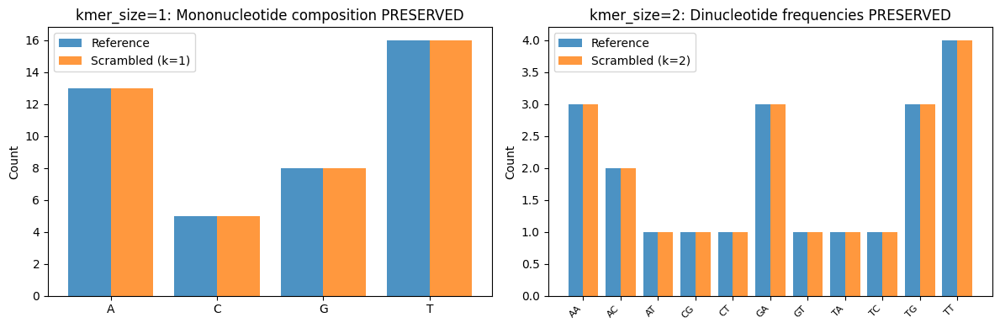
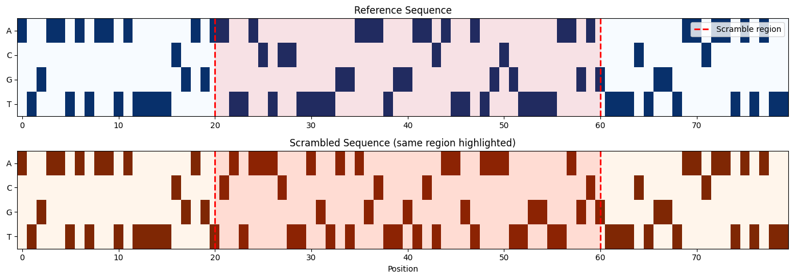

In-Silico Mutagenesis and Scrambled Controls
Learn how to use supremo_lite’s mutagenesis functions to:
Generate saturation mutagenesis sequences for every position in a region
Create targeted mutations around specific anchors or BED-defined regions
Generate scrambled control sequences that preserve nucleotide composition
Setup
import supremo_lite as sl
import numpy as np
import pandas as pd
import matplotlib.pyplot as plt
from pyfaidx import Fasta
from collections import Counter
import os
print(f"supremo_lite version: {sl.__version__}")
# Load test data
test_data_dir = "../../tests/data"
reference = Fasta(os.path.join(test_data_dir, "test_genome.fa"))
print(f"\nReference genome chromosomes:")
for chrom in reference.keys():
print(f" {chrom}: {len(reference[chrom])} bp")
supremo_lite version: 1.0.0
Reference genome chromosomes:
chr1: 80 bp
chr2: 80 bp
chr3: 80 bp
chr4: 80 bp
chr5: 80 bp
chr6: 80 bp
Saturation Mutagenesis with get_sm_sequences()
Generate all possible single-nucleotide mutations for every position in a region. Each position gets 3 alternate alleles (the nucleotides that differ from reference).
# Mutate positions 10-20 on chr1
chrom = "chr1"
start, end = 10, 20
ref_seq, alt_seqs, metadata = sl.get_sm_sequences(
chrom=chrom,
start=start,
end=end,
reference_fasta=reference
)
print(f"Region: {chrom}:{start}-{end} ({end - start} bp)")
print(f"Reference sequence shape: {ref_seq.shape}")
print(f"Alternate sequences shape: {alt_seqs.shape}")
print(f"\nGenerated {len(metadata)} mutations (10 positions × 3 alternates)")
print(f"\nMetadata columns: {list(metadata.columns)}")
print(f"\nFirst 6 mutations:")
print(metadata.head(6).to_string(index=False))
Region: chr1:10-20 (10 bp)
Reference sequence shape: torch.Size([4, 10])
Alternate sequences shape: torch.Size([30, 4, 10])
Generated 30 mutations (10 positions × 3 alternates)
Metadata columns: ['chrom', 'window_start', 'window_end', 'variant_offset0', 'ref', 'alt']
First 6 mutations:
chrom window_start window_end variant_offset0 ref alt
chr1 10 20 0 T A
chr1 10 20 0 T C
chr1 10 20 0 T G
chr1 10 20 1 A C
chr1 10 20 1 A G
chr1 10 20 1 A T
Targeted Mutagenesis with get_sm_subsequences()
Mutate only specific regions within a larger sequence window. Two approaches:
Anchor-based: Center mutations around a specific position
BED-based: Mutate regions defined in a BED file
# Anchor-based: mutate positions within ±5 bp of position 40
ref_seq, alt_seqs, metadata = sl.get_sm_subsequences(
chrom="chr1",
seq_len=80, # Full window length
reference_fasta=reference,
anchor=40, # Center position
anchor_radius=2 # Mutate positions 38-42
)
print(f"Anchor-based mutagenesis:")
print(f" Window: 80 bp centered on position 40")
print(f" Generated {len(metadata)} mutations (10 positions × 3 alternates)")
print(metadata.to_string(index=False))
Anchor-based mutagenesis:
Window: 80 bp centered on position 40
Generated 12 mutations (10 positions × 3 alternates)
chrom window_start window_end variant_offset0 ref alt
chr1 0 80 38 T A
chr1 0 80 38 T C
chr1 0 80 38 T G
chr1 0 80 39 G A
chr1 0 80 39 G C
chr1 0 80 39 G T
chr1 0 80 40 G A
chr1 0 80 40 G C
chr1 0 80 40 G T
chr1 0 80 41 A C
chr1 0 80 41 A G
chr1 0 80 41 A T
# BED-based: mutate regions from a BED file
bed_df = pd.DataFrame({
"chrom": ["chr1", "chr1"],
"start": [10, 50],
"end": [15, 55]
})
ref_seq, alt_seqs, metadata = sl.get_sm_subsequences(
chrom="chr1",
seq_len=80,
reference_fasta=reference,
bed_regions=bed_df
)
print(f"BED-based mutagenesis:")
print(f" Region 1: chr1:10-15 (5 bp)")
print(f" Region 2: chr1:50-55 (5 bp)")
print(f" Generated {len(metadata)} mutations (10 positions × 3 alternates)")
BED-based mutagenesis:
Region 1: chr1:10-15 (5 bp)
Region 2: chr1:50-55 (5 bp)
Generated 30 mutations (10 positions × 3 alternates)
Scrambled Control Sequences
The get_scrambled_subsequences() function generates negative control sequences by scrambling BED-defined regions while preserving nucleotide composition. This is useful for:
Creating matched controls that maintain GC content
Disrupting regulatory motifs while keeping sequence properties
Generating multiple scrambled versions for statistical analysis
# Define a region to scramble
bed_df = pd.DataFrame({
"chrom": ["chr1"],
"start": [20],
"end": [60] # 40 bp region to scramble
})
# Generate 5 scrambled versions
ref_seqs, scrambled_seqs, metadata = sl.get_scrambled_subsequences(
chrom="chr1",
seq_len=80,
reference_fasta=reference,
bed_regions=bed_df,
n_scrambles=5,
random_state=42 # For reproducibility
)
print(f"Scrambled subsequences:")
print(f" Reference sequences: {ref_seqs.shape}")
print(f" Scrambled sequences: {scrambled_seqs.shape}")
print(f" Metadata rows: {len(metadata)}")
print(f"\nMetadata columns: {list(metadata.columns)}")
Scrambled subsequences:
Reference sequences: torch.Size([1, 4, 80])
Scrambled sequences: torch.Size([5, 4, 80])
Metadata rows: 5
Metadata columns: ['chrom', 'window_start', 'window_end', 'scramble_start', 'scramble_end', 'scramble_idx', 'ref', 'alt']
# Examine the metadata
print("Scramble metadata:")
print(metadata.to_string(index=False))
Scramble metadata:
chrom window_start window_end scramble_start scramble_end scramble_idx ref alt
chr1 0 80 20 60 0 AATTACTCCTTTTGGAAATGGAACATTATGCGTTTTAAGA TCATAAACTTAGTATAGCTTGTCTAAGTAAATTGGTTAGC
chr1 0 80 20 60 1 AATTACTCCTTTTGGAAATGGAACATTATGCGTTTTAAGA GGTTAAATTCGGATATAACATCTACATTTTTGGGTTACAA
chr1 0 80 20 60 2 AATTACTCCTTTTGGAAATGGAACATTATGCGTTTTAAGA TTCATACTAAATTGATTGTATGTGTCGAAATTAAGGCATC
chr1 0 80 20 60 3 AATTACTCCTTTTGGAAATGGAACATTATGCGTTTTAAGA TACCTTAATATAATGCGTATAGTGAATTAGCTTAAGGCTT
chr1 0 80 20 60 4 AATTACTCCTTTTGGAAATGGAACATTATGCGTTTTAAGA TGCTTATATGTGTTGATTAATTCAAAAATGACGCAGTTAC
Nucleotide Composition Preservation
The key property of scrambling is that it preserves nucleotide composition while disrupting sequence patterns.
# Get original and scrambled sequences from metadata
ref_region = metadata.iloc[0]["ref"]
alt_region = metadata.iloc[0]["alt"]
print(f"Reference sequence: {ref_region}")
print(f"Scrambled sequence: {alt_region}")
print(f"\nLength preserved: {len(ref_region)} == {len(alt_region)}")
# Count nucleotides
ref_counts = Counter(ref_region)
alt_counts = Counter(alt_region)
print(f"\nNucleotide counts:")
print(f" Reference: A={ref_counts['A']}, C={ref_counts['C']}, G={ref_counts['G']}, T={ref_counts['T']}")
print(f" Scrambled: A={alt_counts['A']}, C={alt_counts['C']}, G={alt_counts['G']}, T={alt_counts['T']}")
print(f"\nComposition preserved: {ref_counts == alt_counts}")
Reference sequence: AATTACTCCTTTTGGAAATGGAACATTATGCGTTTTAAGA
Scrambled sequence: TCATAAACTTAGTATAGCTTGTCTAAGTAAATTGGTTAGC
Length preserved: 40 == 40
Nucleotide counts:
Reference: A=13, C=5, G=7, T=15
Scrambled: A=13, C=5, G=7, T=15
Composition preserved: True
K-mer Shuffling
The kmer_size parameter controls what level of sequence composition is preserved during scrambling:
kmer_size |
Shuffle Unit |
Preserves |
|---|---|---|
1 (default) |
Individual nucleotides |
Nucleotide composition |
2 |
Dinucleotides (2-mers) |
Dinucleotide frequencies |
3 |
Trinucleotides (3-mers) |
Trinucleotide frequencies |
Leftover Base Handling: If the region length is not evenly divisible by the k-mer size, the remaining bases are treated as a partial k-mer and shuffled along with the complete k-mers. For example, a 15bp region with kmer_size=2 produces 7 complete 2-mers plus 1 leftover base—all 8 chunks participate in the shuffle.
This is particularly useful when you need controls that maintain specific sequence properties like dinucleotide patterns or splice site motifs.
# Compare different k-mer shuffle sizes
# Using a 42bp region (divisible b 2 and 3) for clean k-mer preservation demo
bed_df = pd.DataFrame({
"chrom": ["chr1"],
"start": [20],
"end": [62] # 42 bp = divisible 2 and 3
})
def get_kmers(seq, k):
"""Count non-overlapping k-mers in a sequence."""
return Counter([seq[i:i+k] for i in range(0, len(seq) - k + 1, k)])
print("Comparing k-mer shuffle sizes:\n")
print("=" * 70)
for k in [1, 2, 3]:
_, _, meta = sl.get_scrambled_subsequences(
chrom="chr1",
seq_len=80,
reference_fasta=reference,
bed_regions=bed_df,
n_scrambles=1,
kmer_size=k,
random_state=42
)
ref_region = meta.iloc[0]["ref"]
alt_region = meta.iloc[0]["alt"]
# Count k-mers (non-overlapping)
ref_kmers = get_kmers(ref_region, k)
alt_kmers = get_kmers(alt_region, k)
kmer_preserved = ref_kmers == alt_kmers
print(f"\nkmer_size={k}:")
print(f" Reference: {ref_region[:30]}...")
print(f" Scrambled: {alt_region[:30]}...")
print(f" {k}-mer frequencies preserved: {kmer_preserved}")
print("\n" + "=" * 70)
print("Note: Region length (42bp) is divisible by all k-mer sizes.")
print("With leftover bases, k-mer boundaries may shift, but all chunks")
print("(including partial k-mers) are still shuffled together.")
Comparing k-mer shuffle sizes:
======================================================================
kmer_size=1:
Reference: AATTACTCCTTTTGGAAATGGAACATTATG...
Scrambled: TAGTAATTCTCGGTAACATGTACTATATTA...
1-mer frequencies preserved: True
kmer_size=2:
Reference: AATTACTCCTTTTGGAAATGGAACATTATG...
Scrambled: TTGACGGTATTGGATGTGTCAATTTTACGA...
2-mer frequencies preserved: True
kmer_size=3:
Reference: AATTACTCCTTTTGGAAATGGAACATTATG...
Scrambled: TGGAACATGTTTAATTTTAGTCGTAAATCC...
3-mer frequencies preserved: True
======================================================================
Note: Region length (42bp) is divisible by all k-mer sizes.
With leftover bases, k-mer boundaries may shift, but all chunks
(including partial k-mers) are still shuffled together.
Note: Region length (42bp) is divisible by all k-mer sizes. With leftover bases, k-mer boundaries may shift, but all chunks (including partial k-mers) are still shuffled together.
# Visualize k-mer preservation: k=1 preserves mononucleotides, k=2 preserves dinucleotides
fig, axes = plt.subplots(1, 2, figsize=(12, 4))
# Use the same 42bp region from above
bed_df = pd.DataFrame({
"chrom": ["chr1"],
"start": [20],
"end": [62]
})
# Get data for k=1 and k=2
results = {}
for k in [1, 2]:
_, _, meta = sl.get_scrambled_subsequences(
chrom="chr1", seq_len=80, reference_fasta=reference,
bed_regions=bed_df, n_scrambles=1, kmer_size=k, random_state=42
)
results[k] = {
'ref': meta.iloc[0]["ref"],
'alt': meta.iloc[0]["alt"]
}
ref_region = results[1]['ref']
# Plot mononucleotide counts for k=1
ref_mono = Counter(ref_region)
k1_mono = Counter(results[1]['alt'])
nucs = ['A', 'C', 'G', 'T']
x = range(len(nucs))
axes[0].bar([i - 0.2 for i in x], [ref_mono.get(n, 0) for n in nucs], 0.4, label='Reference', alpha=0.8)
axes[0].bar([i + 0.2 for i in x], [k1_mono.get(n, 0) for n in nucs], 0.4, label='Scrambled (k=1)', alpha=0.8)
axes[0].set_xticks(x)
axes[0].set_xticklabels(nucs)
axes[0].set_ylabel('Count')
axes[0].set_title('kmer_size=1: Mononucleotide composition PRESERVED')
axes[0].legend()
# Plot dinucleotide counts for k=2
ref_di = get_kmers(ref_region, 2)
k2_di = get_kmers(results[2]['alt'], 2)
dinucs = sorted(set(ref_di.keys()) | set(k2_di.keys()))
x = range(len(dinucs))
axes[1].bar([i - 0.2 for i in x], [ref_di.get(d, 0) for d in dinucs], 0.4, label='Reference', alpha=0.8)
axes[1].bar([i + 0.2 for i in x], [k2_di.get(d, 0) for d in dinucs], 0.4, label='Scrambled (k=2)', alpha=0.8)
axes[1].set_xticks(x)
axes[1].set_xticklabels(dinucs, rotation=45, ha='right', fontsize=8)
axes[1].set_ylabel('Count')
axes[1].set_title('kmer_size=2: Dinucleotide frequencies PRESERVED')
axes[1].legend()
plt.tight_layout()
plt.show()

Visualizing Encoded Sequences
Compare the one-hot encoded reference and scrambled sequences to see how the scrambling affects the sequence pattern.
# Get the scramble region boundaries
scram_start = int(metadata.iloc[0]['scramble_start'])
scram_end = int(metadata.iloc[0]['scramble_end'])
# Convert to numpy for visualization
ref_viz = ref_seqs[0].numpy() if hasattr(ref_seqs[0], 'numpy') else ref_seqs[0]
scram_viz = scrambled_seqs[0].numpy() if hasattr(scrambled_seqs[0], 'numpy') else scrambled_seqs[0]
fig, axes = plt.subplots(2, 1, figsize=(14, 5))
# Reference sequence
im1 = axes[0].imshow(ref_viz, cmap='Blues', aspect='auto')
axes[0].set_yticks([0, 1, 2, 3])
axes[0].set_yticklabels(['A', 'C', 'G', 'T'])
axes[0].set_title('Reference Sequence')
axes[0].axvline(x=scram_start, color='red', linestyle='--', linewidth=2, label='Scramble region')
axes[0].axvline(x=scram_end, color='red', linestyle='--', linewidth=2)
axes[0].axvspan(scram_start, scram_end, alpha=0.1, color='red')
axes[0].legend(loc='upper right')
# Scrambled sequence
im2 = axes[1].imshow(scram_viz, cmap='Oranges', aspect='auto')
axes[1].set_yticks([0, 1, 2, 3])
axes[1].set_yticklabels(['A', 'C', 'G', 'T'])
axes[1].set_title('Scrambled Sequence (same region highlighted)')
axes[1].set_xlabel('Position')
axes[1].axvline(x=scram_start, color='red', linestyle='--', linewidth=2)
axes[1].axvline(x=scram_end, color='red', linestyle='--', linewidth=2)
axes[1].axvspan(scram_start, scram_end, alpha=0.1, color='red')
plt.tight_layout()
plt.show()
print(f"Scrambled region: positions {scram_start}-{scram_end}")
print(f"Regions outside the scramble boundaries remain identical.")

Scrambled region: positions 20-60
Regions outside the scramble boundaries remain identical.
Next Steps
01_getting_started.ipynb - Basic supremo_lite functionality
02_personalized_genomes.ipynb - Genome personalization workflows
03_prediction_alignment.ipynb - Align model predictions across variants
04_pam_disruption.ipynb - CRISPR PAM disruption analysis
Mutagenesis Guide - Detailed documentation and API reference